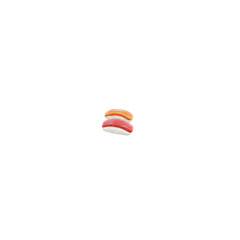

주요 관광지
-
개화예술공원
2005년 7월 27일 개원하였으며, 주변의 부대시설을 포함하여 총면적이 18만여㎡에 이른다. 허브랜드와 음악당, 육필시공원, 비림공원, 모산미술관 등으로 이루어져 있다.
입장료 | 일반 5,000원 학생/어린이 3,000원 -
죽도
섬 전체에 대나무가 울창해 이런 이름이 붙었다. 과거 농업으로는 약간의 쌀·보리 등을 재배하며, 조개·꼬막·굴 등을 양식하면서 사는 전형적인 섬마을이었다.
입장료 | 성인 1,200원
-
성주산 일출전망대
성주산 전망대는 성주산 중턱에 위치해 있으며 등산로를 따라 한 시간 정도 오르면 닿을 수 있고 차량 접근도 가능하다. 전망대에 오르면 드넓은 들판이 한눈에 들어오는데 멀리 바다와 섬까지 감상할 수 있고, 좌측으로는 성주산 정상과 우측으로 만수산 정상을 만날 수 있다. 전망대에서 더 올라가면 활공장이 있어 패러글라이딩을 즐기거나 구경할 수 있다. 유성우라고 불리는 별똥별과 함께 밤하늘의 별을 관측하기 좋은 곳으로도 유명하다.
-
김좌진장군묘
독립운동가인 백야 김좌진장군의 묘소이다. 암살 직후 만주땅에 묻혔다가 아내 오숙근 여사가 1940년 장군의 유해를 밀감상자로 위장해 비밀리에 홍성군 서부면 이호리에 안장하였다. 그 후 1957년 부인이 타계하자 아들 김두한이 현 위치에 합장하였다.
맛집 및 카페
-

해물상회
한식
주소 | 충남 보령시 해수욕장6길 118 해물상회 -

담쟁이 돈가스
일식
주소 | 충남 보령시 통나무마을1길 61 2층 -

라스칼라
카페
주소 | 충남 보령시 해수욕장8길 14 라스칼라 카페